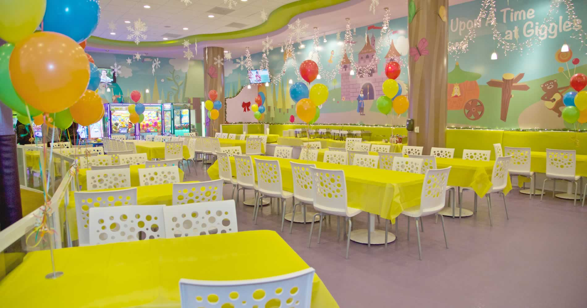

Image Gallery:

Good quality and hygenic GOODS
Friendly Atmosphere
Organizing games to all ages
and make them happy.
Experienced decorators
Our company – B-7 EVENTS Pvt. Ltd is a leading Event Management Company in INDIA. As an event management company, we are specializes into the wedding planning & corporate entertainment. We provide creative talents such as emcees (MC’s), music performance, DJ, comedy shows, magic shows, wu shu, Chinese orchestra, various dance shows and etc. Besides that, we are also provide the lighting system, sound system, photographer and videographer. We are always giving the best service to our clients because our business futures truly depend on the satisfaction of the customers.
An event management is a process by which an event is prepared, planned and produces. It involves study the intricacy of the brand, coordinating the technical aspects, devising the event concept, planning the logistics and identifying the target audience before actually executing the modality of the proposed event. The event management company service many kind of areas, such as marketing programs, corporate event and special corporate hospitality events like film premieres, award ceremonies, concerts, launch party, commercial events, fashion show and other private events such as the wedding.
There are four functions that can help our company function, the first function is to plan, in the event management, planning is an unending course of the action. Some time there may be sudden strategies where we have to face. We need to plan what we wants to do when the emergency problem is occur and we also need to plan how can become the best and run the process smoothly. The second function that can help our company function is organized. Be an event management, we need to getting organized and getting prepared. We must to organize all the resources with very well before we plan what we do. This function is mainly to establish and maintain the relationships and it also can assign required the resources. The third function is directing, this function can help our event management company to control and supervise the actions of all the staff. This function can help them to assist the other staff before they achieving the goals. The final function that helps our company function is control, it is include establishing the performance standards on the company’s objectives. Control can help the company can always maintain their current standard or they also can adjustment the standard of the company. A company which have fully control are always can achieve the goal smoothly.
Image Gallery: |
|||
|---|---|---|---|
|
 | ||
Good quality and hygenic GOODS |
Friendly Atmosphere |
Organizing games to all ages |
Experienced decorators |